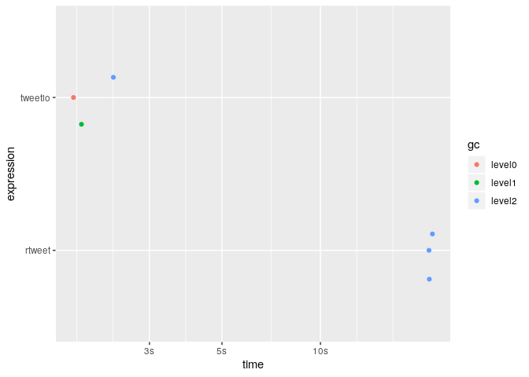

Progress
Introduction
{tweetio} goal is to enable safe, efficient I/O and transformation of Twitter data. Whether the data came from the Twitter API, a database dump, or some other source, {tweetio}’s job is to get them into R and ready for analysis.
{tweetio} is not a competitor to {rtweet}: it is not interested in collecting Twitter data. That said, it definitely attempts to emulate its data frame schema because…
- It’s incredibly easy to use.
- It’s more efficient to analyze than a key-value format following the raw data.
- It’d be a waste not to maximize compatibiltiy with tools built specifically around
{rtweet}’s data frames.
Installation
You’ll need a C++ compiler. If you’re using Windows, that means Rtools.
Usage
Simple Example
First, we’ll save a stream of tweets using rtweet::stream_tweets().
temp_file <- tempfile(fileext = ".json")
rtweet::stream_tweets(timeout = 15, parse = FALSE, file_name = temp_file)We can then pass the file path to tweetio::read_tweets() to efficiently parse the data into an {rtweet}-style data frame.
#> # A tibble: 495 x 93
#> user_id status_id created_at screen_name text source reply_to_status~ reply_to_user_id reply_to_screen~
#> <chr> <chr> <dttm> <chr> <chr> <chr> <chr> <chr> <chr>
#> 1 353747~ 12010036~ 2019-12-01 05:02:42 leiiisilva Grab~ Twitt~ <NA> <NA> <NA>
#> 2 500994~ 12010036~ 2019-12-01 05:02:42 UofA_AugVi~ MBB:~ Twitt~ <NA> <NA> <NA>
#> 3 438789~ 12010036~ 2019-12-01 05:02:43 Dumb_bab RT @~ Twitt~ <NA> <NA> <NA>
#> 4 903478~ 12010036~ 2019-12-01 05:02:43 fullsunflo~ kage~ Twitt~ <NA> <NA> <NA>
#> 5 113295~ 12010036~ 2019-12-01 05:02:43 jaIsbV7bZa~ "RT ~ Twitt~ <NA> <NA> <NA>
#> 6 117905~ 12010036~ 2019-12-01 05:02:43 jinsei8148 @591~ Twitt~ 120100187262395~ 2982659066 5917bm
#> 7 330017~ 12010036~ 2019-12-01 05:02:43 StevenLam29 RT @~ Twitt~ <NA> <NA> <NA>
#> 8 782127~ 12010036~ 2019-12-01 05:02:43 jkxbangtann RT @~ Twitt~ <NA> <NA> <NA>
#> 9 976364~ 12010036~ 2019-12-01 05:02:43 KKBADIN RT @~ Twitt~ <NA> <NA> <NA>
#> 10 893878~ 12010036~ 2019-12-01 05:02:43 jiwon_peach RT @~ Twitt~ <NA> <NA> <NA>
#> # ... with 485 more rows, and 84 more variables: is_quote <lgl>, is_retweet <lgl>, hashtags <list>,
#> # urls_expanded_url <list>, media_url <list>, media_expanded_url <list>, media_type <list>, mentions_user_id <list>,
#> # mentions_screen_name <list>, lang <chr>, quoted_status_id <chr>, quoted_text <chr>, quoted_created_at <dttm>,
#> # quoted_source <chr>, quoted_favorite_count <int>, quoted_retweet_count <int>, quoted_user_id <chr>,
#> # quoted_screen_name <chr>, quoted_name <chr>, quoted_followers_count <int>, quoted_friends_count <int>,
#> # quoted_statuses_count <int>, quoted_location <chr>, quoted_description <chr>, quoted_verified <lgl>,
#> # retweet_status_id <chr>, retweet_text <chr>, retweet_created_at <dttm>, retweet_source <chr>,
#> # retweet_favorite_count <int>, retweet_retweet_count <int>, retweet_user_id <chr>, retweet_screen_name <chr>,
#> # retweet_name <chr>, retweet_followers_count <int>, retweet_friends_count <int>, retweet_statuses_count <int>,
#> # retweet_location <chr>, retweet_description <chr>, retweet_verified <lgl>, place_url <chr>, place_name <chr>,
#> # place_full_name <chr>, place_type <chr>, country <chr>, country_code <chr>, bbox_coords <list>, status_url <chr>,
#> # name <chr>, location <chr>, description <chr>, url <chr>, protected <lgl>, followers_count <int>,
#> # friends_count <int>, listed_count <int>, statuses_count <int>, favourites_count <int>, account_created_at <dttm>,
#> # verified <lgl>, profile_url <chr>, account_lang <chr>, profile_banner_url <chr>, profile_image_url <chr>,
#> # is_retweeted <lgl>, retweet_place_url <chr>, retweet_place_name <chr>, retweet_place_full_name <chr>,
#> # retweet_place_type <chr>, retweet_country <chr>, retweet_country_code <chr>, retweet_bbox_coords <list>,
#> # quoted_place_url <chr>, quoted_place_name <chr>, quoted_place_full_name <chr>, quoted_place_type <chr>,
#> # quoted_country <chr>, quoted_country_code <chr>, quoted_bbox_coords <list>, timestamp_ms <dttm>,
#> # contributors_enabled <lgl>, retweet_status_url <chr>, quoted_tweet_url <chr>, reply_to_status_url <chr>Scaling Up
We’re more interested in handling much larger data sets, but for demonstration we’ll use a file of a reasonable size that was obtained using rtweet::stream_tweets().
rtweet_stream_path <- "inst/example-data/api-stream.json.gz"
scales::number_bytes(file.size(rtweet_stream_path))Before compression, the file was about 153 Mb.
Unfortunately, rtweet::parse_stream() may fail parsing streams because the data returned may not be valid JSON.
#> Error: parse error: after array element, I expect ',' or ']'
#> 736405012481"},"timestamp_ms":"1569693801061"}}{"created_at"
#> (right here) ------^The only way around this is to read the entire file into memory and run some validation routine before parsing, which looks something like this…
rtweet_validate_and_parse <- function(source_file_path, target_file_path) {
raw_lines <- readLines(source_file_path)
valid_lines <- raw_lines[vapply(raw_lines, jsonify::validate_json, logical(1L))]
writeLines(valid_lines, target_file_path)
rtweet::parse_stream(target_file_path)
}
rtweet_stream_path2 <- tempfile(fileext = ".json")
rtweet_validate_and_parse(source_file_path = rtweet_stream_path,
target_file_path = rtweet_stream_path2)#> # A tibble: 12,824 x 90
#> user_id status_id created_at screen_name text source display_text_wi~ reply_to_status~ reply_to_user_id
#> <chr> <chr> <dttm> <chr> <chr> <chr> <dbl> <chr> <chr>
#> 1 807195~ 11780078~ 2019-09-28 18:05:23 ykaoi0327 "<U+4EE5><U+4E0A><U+3067>~ Twitt~ NA <NA> <NA>
#> 2 114393~ 11780078~ 2019-09-28 18:05:23 yowasugi723 "@Di~ Twitt~ 9 117771450591824~ 113811437998190~
#> 3 247059~ 11780078~ 2019-09-28 18:05:23 itsauroras~ "“So~ Twitt~ NA <NA> <NA>
#> 4 822602~ 11780078~ 2019-09-28 18:05:23 Darrell894~ It's~ Twitt~ NA <NA> <NA>
#> 5 797200~ 11780078~ 2019-09-28 18:05:23 NastyWoman~ @Bra~ Twitt~ 69 117796816033668~ 21833728
#> 6 110779~ 11780078~ 2019-09-28 18:05:23 DeshaunAwe~ met ~ twitt~ NA <NA> <NA>
#> 7 110441~ 11780078~ 2019-09-28 18:05:23 diamondy_u "<U+2728>Lo~ Twitt~ NA <NA> <NA>
#> 8 359294~ 11780078~ 2019-09-28 18:05:23 piyakat28 "Saf~ Twitt~ NA <NA> <NA>
#> 9 194250~ 11780078~ 2019-09-28 18:05:23 Stgo_centro Me d~ Twitt~ NA <NA> <NA>
#> 10 116013~ 11780078~ 2019-09-28 18:05:23 119lonwi_y~ <U+D55C><U+AD6D><U+C5D0><U+C11C>~ Twitt~ NA <NA> <NA>
#> # ... with 12,814 more rows, and 81 more variables: reply_to_screen_name <chr>, is_quote <lgl>, is_retweet <lgl>,
#> # favorite_count <int>, retweet_count <int>, quote_count <int>, reply_count <int>, hashtags <list>, symbols <list>,
#> # urls_url <list>, urls_t.co <list>, urls_expanded_url <list>, media_url <list>, media_t.co <list>,
#> # media_expanded_url <list>, media_type <list>, ext_media_url <list>, ext_media_t.co <list>,
#> # ext_media_expanded_url <list>, ext_media_type <chr>, mentions_user_id <list>, mentions_screen_name <list>,
#> # lang <chr>, quoted_status_id <chr>, quoted_text <chr>, quoted_created_at <dttm>, quoted_source <chr>,
#> # quoted_favorite_count <int>, quoted_retweet_count <int>, quoted_user_id <chr>, quoted_screen_name <chr>,
#> # quoted_name <chr>, quoted_followers_count <int>, quoted_friends_count <int>, quoted_statuses_count <int>,
#> # quoted_location <chr>, quoted_description <chr>, quoted_verified <lgl>, retweet_status_id <chr>,
#> # retweet_text <chr>, retweet_created_at <dttm>, retweet_source <chr>, retweet_favorite_count <int>,
#> # retweet_retweet_count <int>, retweet_user_id <chr>, retweet_screen_name <chr>, retweet_name <chr>,
#> # retweet_followers_count <int>, retweet_friends_count <int>, retweet_statuses_count <int>, retweet_location <chr>,
#> # retweet_description <chr>, retweet_verified <lgl>, place_url <chr>, place_name <chr>, place_full_name <chr>,
#> # place_type <chr>, country <chr>, country_code <chr>, geo_coords <list>, coords_coords <list>, bbox_coords <list>,
#> # status_url <chr>, name <chr>, location <chr>, description <chr>, url <chr>, protected <lgl>, followers_count <int>,
#> # friends_count <int>, listed_count <int>, statuses_count <int>, favourites_count <int>, account_created_at <dttm>,
#> # verified <lgl>, profile_url <chr>, profile_expanded_url <chr>, account_lang <lgl>, profile_banner_url <chr>,
#> # profile_background_url <chr>, profile_image_url <chr>Fortunately, {tweetio} can handle these situations by validating the JSON before it gets anywhere near R.
#> # A tibble: 1 x 6
#> expression min median `itr/sec` mem_alloc `gc/sec`
#> <bch:expr> <bch:tm> <bch:tm> <dbl> <bch:byt> <dbl>
#> 1 read_tweets(rtweet_stream_path) 3.21s 3.26s 0.303 136MB 1.01Ignoring the time it takes to run the above rtweet_validate_and_parse() function for rtweet::parse_stream() to work, how much faster is tweetio::read_tweets()?
bench_mark <- bench::mark(
rtweet = rtweet::parse_stream(rtweet_stream_path2),
tweetio = tweetio::read_tweets(rtweet_stream_path2),
check = FALSE,
min_iterations = 3,
filter_gc = FALSE
)
bench_mark[, 1:9]#> # A tibble: 2 x 6
#> expression min median `itr/sec` mem_alloc `gc/sec`
#> <bch:expr> <bch:tm> <bch:tm> <dbl> <bch:byt> <dbl>
#> 1 rtweet 25.95s 26.62s 0.0379 480MB 4.54
#> 2 tweetio 2.56s 2.69s 0.362 95MB 1.33
With bigger files, using rtweet::parse_stream() is no longer realistic, but that’s where tweetio::read_tweets() can help.
Data Dumps
A common practice for handling social media data at scale is to store them in search engine databases like Elasticsearch, but it’s (unfortunately) possible that you’ll need to work with data dumps.
The data collected from APIs are stored inside a nested JSON object named "doc". "doc" is typically embedded in a ton of system metadata, most of which you probably don’t care about.
I’ve encountered two flavors of these schema:
- .jsonl: newline-delimited JSON
- .json: the complete contents of a database dump packed in a JSON array
The .jsonl structure looks something like this:
{"system_metadata_you_dont_care_about":"blahblahblah","more_metadata1":"blahblahblah","more_metadata2":"blahblahblah","more_metadata3":"blahblahblah","more_metadata4":"blahblahblah","more_metadata5":"blahblahblah","doc":{"text":"********************HERE'S THE DATA YOU ACTUALLY WANT********************","id":92108498098018010401,"id_str":"92108498098018010401"},"more_metadata6":"blahblahblah","more_metadata7":"blahblahblah","more_metadata8":"blahblahblah","more_metadata9":"blahblahblah","more_metadata10":"blahblahblah"}
{"system_metadata_you_dont_care_about":"blahblahblah","more_metadata1":"blahblahblah","more_metadata2":"blahblahblah","more_metadata3":"blahblahblah","more_metadata4":"blahblahblah","more_metadata5":"blahblahblah","doc":{"text":"********************HERE'S THE DATA YOU ACTUALLY WANT********************","id":92108498098018010401,"id_str":"92108498098018010401"},"more_metadata6":"blahblahblah","more_metadata7":"blahblahblah","more_metadata8":"blahblahblah","more_metadata9":"blahblahblah","more_metadata10":"blahblahblah"}
{"system_metadata_you_dont_care_about":"blahblahblah","more_metadata1":"blahblahblah","more_metadata2":"blahblahblah","more_metadata3":"blahblahblah","more_metadata4":"blahblahblah","more_metadata5":"blahblahblah","doc":{"text":"********************HERE'S THE DATA YOU ACTUALLY WANT********************","id":92108498098018010401,"id_str":"92108498098018010401"},"more_metadata6":"blahblahblah","more_metadata7":"blahblahblah","more_metadata8":"blahblahblah","more_metadata9":"blahblahblah","more_metadata10":"blahblahblah"}Each line contains a single JSON object resembling the following:
{
"system_metadata_you_dont_care_about": "blahblahblah",
"more_metadata1": "blahblahblah",
"more_metadata2": "blahblahblah",
"more_metadata3": "blahblahblah",
"more_metadata4": "blahblahblah",
"more_metadata5": "blahblahblah",
"doc": {
"text": "********************HERE'S THE DATA YOU ACTUALLY WANT********************",
"id": 92108498098018010401,
"id_str": "92108498098018010401"
},
"more_metadata6": "blahblahblah",
"more_metadata7": "blahblahblah",
"more_metadata8": "blahblahblah",
"more_metadata9": "blahblahblah",
"more_metadata10": "blahblahblah"
}The array structure is a complete dump of the file, which looks something like this:
[
{
"_id": "e5daf1467d2438e31b11b44a82cbd7f5758ba5a1f1d3ecbcc6e1fc04dc9c7c4d-3016858092318",
"_index": "org-77f135f331153568ab7eb0e4c24623a7-default-3769a33b9e88598e38317591e2ee31c3-default-030009",
"_score": null,
"_source": {
"system_metadata_you_dont_care_about": "blahblahblah",
"more_metadata1": "blahblahblah",
"doc": {
"text": "********************HERE'S THE DATA YOU ACTUALLY WANT********************",
"id": 92108498098018010401,
"id_str": "92108498098018010401"
},
"more_metadata6": "blahblahblah"
}
},
{
"_id": "e5daf1467d2438e31b11b44a82cbd7f5758ba5a1f1d3ecbcc6e1fc04dc9c7c4d-3016858092318",
"_index": "org-77f135f331153568ab7eb0e4c24623a7-default-3769a33b9e88598e38317591e2ee31c3-default-030009",
"_score": null,
"_source": {
"system_metadata_you_dont_care_about": "blahblahblah",
"more_metadata1": "blahblahblah",
"doc": {
"text": "********************HERE'S THE DATA YOU ACTUALLY WANT********************",
"id": 92108498098018010401,
"id_str": "92108498098018010401"
},
"more_metadata6": "blahblahblah"
}
}
]This has three unfortunate consequences:
- Packages that were purpose-built to work directly with
{rtweet}’s data frames can’t play along with your data. - You’re going to waste most of your time (and memory) getting data into R that you’re not going to use.
- The data are very tedious to restructure in R (lists of lists of lists of lists of lists…).
{tweetio} solves this by parsing everything and building the data frames at the C++ level.
Spatial Tweets
If you have {sf} installed, you can use as_tweet_sf() to only keep those tweets that contain valid bounding box polygons.
#> Simple feature collection with 2204 features and 0 fields
#> geometry type: POLYGON
#> dimension: XY
#> bbox: xmin: -158.048 ymin: -50.35726 xmax: 175.5507 ymax: 61.4262
#> epsg (SRID): 4326
#> proj4string: +proj=longlat +datum=WGS84 +no_defs
#> First 10 features:
#> bbox_coords
#> 1 POLYGON ((-90.23761 29.9683...
#> 2 POLYGON ((-80.20811 26.0809...
#> 3 POLYGON ((17.08005 59.73069...
#> 4 POLYGON ((-80.51985 39.7198...
#> 5 POLYGON ((-80.34364 25.5991...
#> 6 POLYGON ((-118.6684 33.7045...
#> 7 POLYGON ((-122.0662 37.9242...
#> 8 POLYGON ((-118.4485 33.9768...
#> 9 POLYGON ((-97.66262 27.5785...
#> 10 POLYGON ((-118.6684 33.7045...There are currently three columns that can potentially hold bounding boxes:
bbox_coordsquoted_bbox_coordsretweet_bbox_coords
You can select which one to use to build your sf object by modifying the geom_col= parameter (default: "bbox_coords")
#> Simple feature collection with 1254 features and 0 fields
#> geometry type: POLYGON
#> dimension: XY
#> bbox: xmin: -124.849 ymin: -27.76744 xmax: 153.3179 ymax: 60.29791
#> epsg (SRID): 4326
#> proj4string: +proj=longlat +datum=WGS84 +no_defs
#> First 10 features:
#> quoted_bbox_coords
#> 1 POLYGON ((-73.99354 40.7507...
#> 2 POLYGON ((-73.99354 40.7507...
#> 3 POLYGON ((-73.99354 40.7507...
#> 4 POLYGON ((-73.99354 40.7507...
#> 5 POLYGON ((-73.99354 40.7507...
#> 6 POLYGON ((-73.99354 40.7507...
#> 7 POLYGON ((-73.99354 40.7507...
#> 8 POLYGON ((-73.99354 40.7507...
#> 9 POLYGON ((-73.99354 40.7507...
#> 10 POLYGON ((-73.99354 40.7507...You can also build all the supported bounding boxes by setting geom_col= to "all".
#> Simple feature collection with 7428 features and 1 field
#> geometry type: POLYGON
#> dimension: XY
#> bbox: xmin: -158.048 ymin: -50.35726 xmax: 175.5507 ymax: 61.4262
#> epsg (SRID): 4326
#> proj4string: +proj=longlat +datum=WGS84 +no_defs
#> First 10 features:
#> geometry which_geom
#> 1 POLYGON ((-90.23761 29.9683... bbox_coords
#> 2 POLYGON ((-80.20811 26.0809... bbox_coords
#> 3 POLYGON ((17.08005 59.73069... bbox_coords
#> 4 POLYGON ((-80.51985 39.7198... bbox_coords
#> 5 POLYGON ((-80.34364 25.5991... bbox_coords
#> 6 POLYGON ((-118.6684 33.7045... bbox_coords
#> 7 POLYGON ((-122.0662 37.9242... bbox_coords
#> 8 POLYGON ((-118.4485 33.9768... bbox_coords
#> 9 POLYGON ((-97.66262 27.5785... bbox_coords
#> 10 POLYGON ((-118.6684 33.7045... bbox_coordsFrom there, you can easily use the data like any other {sf} object.
library(ggplot2)
world <- rnaturalearth::ne_countries(returnclass = "sf")
world <- world[world$continent != "Antarctica", ]
sf_for_gg <- sf::st_wrap_dateline(all_bboxes)
ggplot(sf_for_gg) +
geom_sf(fill = "white", color = "lightgray", data = world) +
geom_sf(aes(fill = which_geom, color = which_geom), alpha = 0.15, size = 1, show.legend = TRUE) +
coord_sf(crs = 3857) +
scale_fill_viridis_d() +
scale_color_viridis_d() +
theme(legend.title = element_blank(), legend.position = "top",
panel.background = element_rect(fill = "#daf3ff"))
Tweet Networks
If you want to analyze tweet networks, you can get started immediately using tweetio::as_igraph().
#> IGRAPH 73546af DN-- 64172 238713 --
#> + attr: name (v/c), status_id (e/c), relation (e/c)
#> + edges from 73546af (vertex names):
#> [1] 340165454 ->44607937 50229830 ->146322653
#> [3] 1113359075029295106->6446742 3427037277 ->6446742
#> [5] 2426567863 ->6446742 1049130232559620096->6446742
#> [7] 54342307 ->45882011 850484615978602496 ->6446742
#> [9] 3223860438 ->1082759930338258944 1128691062225219584->327117944
#> [11] 158942796 ->1148290116349095936 421186669 ->1062738433716686848
#> [13] 781608484257214464 ->6446742 2519063076 ->146322653
#> [15] 361935609 ->6446742 822180925467398148 ->32522055
#> + ... omitted several edgesIf you want to take advantage of all the metadata available, you can set all_status_data and/or all_user_data to TRUE
#> IGRAPH 7a8d376 DN-- 64172 238713 --
#> + attr: name (v/c), timestamp_ms (v/n), name.y (v/c), screen_name (v/c), location (v/c), description (v/c),
#> | url (v/c), protected (v/l), followers_count (v/n), friends_count (v/n), listed_count (v/n),
#> | statuses_count (v/n), favourites_count (v/n), account_created_at (v/n), verified (v/l), profile_url
#> | (v/c), account_lang (v/c), profile_banner_url (v/c), profile_image_url (v/c), bbox_coords (v/x),
#> | status_id (e/c), relation (e/c), created_at (e/n), text (e/c), status_url (e/c), source (e/c), is_quote
#> | (e/l), is_retweeted (e/l), media_url (e/x), media_type (e/x), place_url (e/c), place_name (e/c),
#> | place_full_name (e/c), place_type (e/c), country (e/c), country_code (e/c), bbox_coords (e/x),
#> | status_type (e/c)
#> + edges from 7a8d376 (vertex names):
#> [1] 2547690569->6446742 2547690569->6446742 245171523 ->52181976
#> + ... omitted several edgesYou can also build two-mode networks by specifying the target_class as "hashtag"s, "url"s, or "media". The returned <igraph> will be set as bipartite following {igraph}’s convention of a logical vertex attribute specifying each’s partition (users are TRUE).
#> IGRAPH 7b8a101 DN-B 60417 134468 --
#> + attr: name (v/c), type (v/l), status_id (e/c), relation (e/c)
#> + edges from 7b8a101 (vertex names):
#> [1] 340165454 ->ufc244 50229830 ->new 50229830 ->ufc244 1113359075029295106->ufc244
#> [5] 1120821278410145793->ufc244 2945072804 ->ufc244 250392181 ->ufc244 3427037277 ->ufc244
#> [9] 2426567863 ->ufc244 1049130232559620096->ufc244 245455601 ->ufc244 895707290 ->ufc244
#> [13] 767474462254108674 ->ufc244 69783385 ->ufc244 850484615978602496 ->ufc244 3223860438 ->ufc244
#> [17] 518350072 ->ufc244 1128691062225219584->ufc244 158942796 ->ufc244 421186669 ->ufc244
#> [21] 781608484257214464 ->ufc244 854129173937491968 ->ufc244 2519063076 ->new 2519063076 ->ufc244
#> [25] 361935609 ->ufc244 822180925467398148 ->ufc244 1107856314875695105->ufc244 766650582409109505 ->ufc244
#> [29] 1401244394 ->new 1401244394 ->ufc244 452637226 ->ufc244 110374459 ->ufc244
#> + ... omitted several edges#> IGRAPH 7bb0f77 DN-B 8864 10014 --
#> + attr: name (v/c), type (v/l), status_id (e/c), relation (e/c)
#> + edges from 7bb0f77 (vertex names):
#> [1] 54342307 ->https://twitter.com/jjmast1/status/1190812770951925760
#> [2] 822180925467398148 ->https://twitter.com/usatoday/status/1190848577171529729
#> [3] 1161588424488341504->https://livestreamon.co/ufc244
#> [4] 1020289868231036929->https://twitter.com/sososfm/status/1190817388176035840
#> [5] 222715765 ->http://is.gd/BDIHaF
#> [6] 700295730 ->https://twitter.com/Karlos_ch/status/1190830330703499266
#> [7] 1174700278769225730->https://twitter.com/mitchhorowitz/status/1190809746347085824
#> + ... omitted several edges#> IGRAPH 7c0c59b DN-B 35704 45448 --
#> + attr: name (v/c), type (v/l), status_id (e/c), relation (e/c)
#> + edges from 7c0c59b (vertex names):
#> [1] 1113359075029295106->http://pbs.twimg.com/tweet_video_thumb/EIa_t4bXYAEFVGR.jpg
#> [2] 3427037277 ->http://pbs.twimg.com/tweet_video_thumb/EIa_t4bXYAEFVGR.jpg
#> [3] 2426567863 ->http://pbs.twimg.com/tweet_video_thumb/EIa_t4bXYAEFVGR.jpg
#> [4] 1049130232559620096->http://pbs.twimg.com/tweet_video_thumb/EIa_t4bXYAEFVGR.jpg
#> [5] 767474462254108674 ->http://pbs.twimg.com/tweet_video_thumb/EIa_-hyX0AA7j1o.jpg
#> [6] 850484615978602496 ->http://pbs.twimg.com/media/EIa--ZTXUAEP7PH.jpg
#> [7] 3223860438 ->http://pbs.twimg.com/tweet_video_thumb/EIa_t4bXYAEFVGR.jpg
#> [8] 158942796 ->http://pbs.twimg.com/ext_tw_video_thumb/1190817246110720000/pu/img/jw75ZV3YmtL2PgXT.jpg
#> + ... omitted several edgesYou’re not stuck with going directly to <igraph> objects though. Underneath the hood, as_igraph() calls as_proto_net(), which builds the edge and node data frames first. as_proto_net() is also exported.
#> $edges
#> # A tibble: 238,713 x 20
#> from to status_id relation created_at text status_url source is_quote is_retweeted media_url media_type
#> <chr> <chr> <chr> <chr> <dttm> <chr> <chr> <chr> <lgl> <lgl> <list> <list>
#> 1 2547~ 6446~ 11908873~ retweet 2019-11-03 07:03:55 "RT ~ https://t~ Twitt~ FALSE FALSE <chr [1]> <chr [1]>
#> 2 2547~ 6446~ 11908873~ mentions 2019-11-03 07:03:55 "RT ~ https://t~ Twitt~ FALSE FALSE <chr [1]> <chr [1]>
#> 3 2451~ 5218~ 11908873~ mentions 2019-11-03 07:03:55 “Fu@~ https://t~ Twitt~ FALSE FALSE <chr [1]> <chr [1]>
#> 4 8062~ 1463~ 11908873~ retweet 2019-11-03 07:03:55 RT @~ https://t~ Twitt~ FALSE FALSE <chr [1]> <chr [1]>
#> 5 8062~ 1463~ 11908873~ mentions 2019-11-03 07:03:55 RT @~ https://t~ Twitt~ FALSE FALSE <chr [1]> <chr [1]>
#> 6 8045~ 4588~ 11908873~ retweet 2019-11-03 07:03:55 RT @~ https://t~ Twitt~ TRUE FALSE <chr [1]> <chr [1]>
#> 7 8045~ 3934~ 11908873~ quoted 2019-11-03 07:03:55 RT @~ https://t~ Twitt~ TRUE FALSE <chr [1]> <chr [1]>
#> 8 8045~ 4588~ 11908873~ mentions 2019-11-03 07:03:55 RT @~ https://t~ Twitt~ TRUE FALSE <chr [1]> <chr [1]>
#> 9 2973~ 8174~ 11908873~ retweet 2019-11-03 07:03:55 RT @~ https://t~ Twitt~ TRUE FALSE <chr [1]> <chr [1]>
#> 10 2973~ 7776~ 11908873~ quoted 2019-11-03 07:03:55 RT @~ https://t~ Twitt~ TRUE FALSE <chr [1]> <chr [1]>
#> # ... with 238,703 more rows, and 8 more variables: place_url <chr>, place_name <chr>, place_full_name <chr>,
#> # place_type <chr>, country <chr>, country_code <chr>, bbox_coords <list>, status_type <chr>
#>
#> $nodes
#> # A tibble: 64,172 x 20
#> name timestamp_ms name.y screen_name location description url protected followers_count friends_count
#> <chr> <dttm> <chr> <chr> <chr> <chr> <chr> <lgl> <int> <int>
#> 1 1000~ 2019-11-03 04:53:06 <U+1D07><U+029F> <U+1D0A><U+1D1C>~ Urbeaner_ Colorad~ "UCCS ‘21 ~ <NA> FALSE 158 250
#> 2 1000~ 2019-11-03 05:24:27 adrie~ a2rien_ "DTM \U~ <NA> <NA> FALSE 161 124
#> 3 1000~ 2019-11-03 05:08:38 Adee SailorSlim Freepor~ Instagram:~ <NA> FALSE 54 24
#> 4 1000~ 2019-11-03 06:09:47 Khair~ Jenklens_ 209 "26. Marri~ http~ FALSE 1977 1622
#> 5 1000~ 2019-11-03 05:13:37 me, m~ Amanda8728~ "Usa " take your ~ <NA> FALSE 28 243
#> 6 1000~ 2019-11-03 04:49:04 hoodi~ eghoops1 htx shoot hoop~ http~ FALSE 838 258
#> 7 1000~ 2019-11-03 05:19:56 Dylan~ CieslikDyl~ Oak Rid~ Aspiring B~ <NA> FALSE 38 137
#> 8 1000~ 2019-11-03 06:17:14 "Tony~ tonystinks~ <NA> Sc: tonyst~ <NA> FALSE 54 76
#> 9 1000~ 2019-11-03 06:49:02 Pablo~ PabloEskiB~ London,~ "The one s~ <NA> FALSE 982 295
#> 10 1000~ 2019-11-03 04:37:22 ThomT~ ThomThom715 <NA> <NA> <NA> FALSE 3 30
#> # ... with 64,162 more rows, and 10 more variables: listed_count <int>, statuses_count <int>, favourites_count <int>,
#> # account_created_at <dttm>, verified <lgl>, profile_url <chr>, account_lang <chr>, profile_banner_url <chr>,
#> # profile_image_url <chr>, bbox_coords <list>
#>
#> attr(,"class")
#> [1] "proto_net"
#> attr(,"target_class")
#> [1] "user"Shout Outs
{tweetio} uses a combination of C++ via {Rcpp}, the rapidjson C++ library (made available by {rapidjsonr}), {jsonify}) for an R-level interface to rapidjson, {RcppProgress}), and R’s secret weapon: {data.table}.
Major inspiration from {ndjson} was taken, particularly its use of Gzstream.